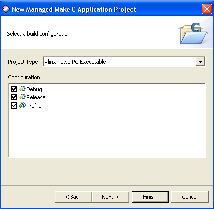

Software Applications
You can select the type of project and build configurations from this page of the wizard.

| Name | Function |
|---|---|
| Project Type | Specifies a project type from the list provided. |
| Configurations | Specifies which build configurations will be supported for your project. |
| Show All Project Types | If selected, lists all known project types in the Project Type list. By default, the list is filtered so that only project types that are buildable on the host system are shown. |
| Show All Configurations | If selected, lists all known default configurations in the Configurations window. By default, the list is filtered so that only configurations that are buildable on the host system are shown. |

Software Platform
Managed Make, Name
Managed Make, Referenced
Projects
Managed Make, C/C++ Indexer